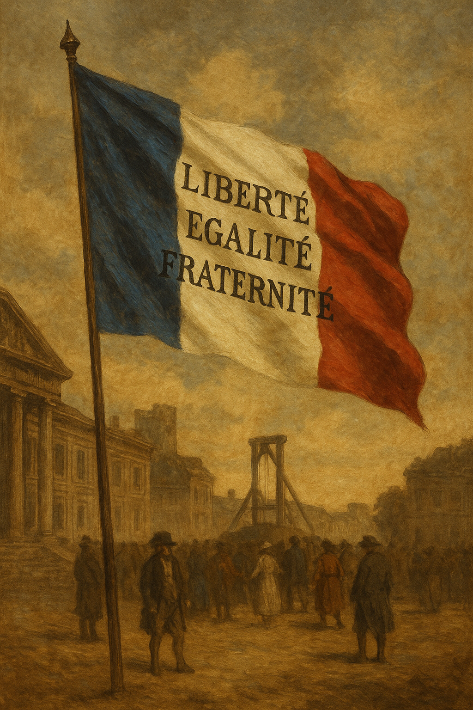

Menu
Home principale
Precedente
Conclusione
La Rivoluzione Francese ha trasformato la società e diffuso i valori di libertà, uguaglianza e diritti umani in tutto il mondo.
Le sue conseguenze si riflettono ancora oggi nella nostra idea di democrazia.
